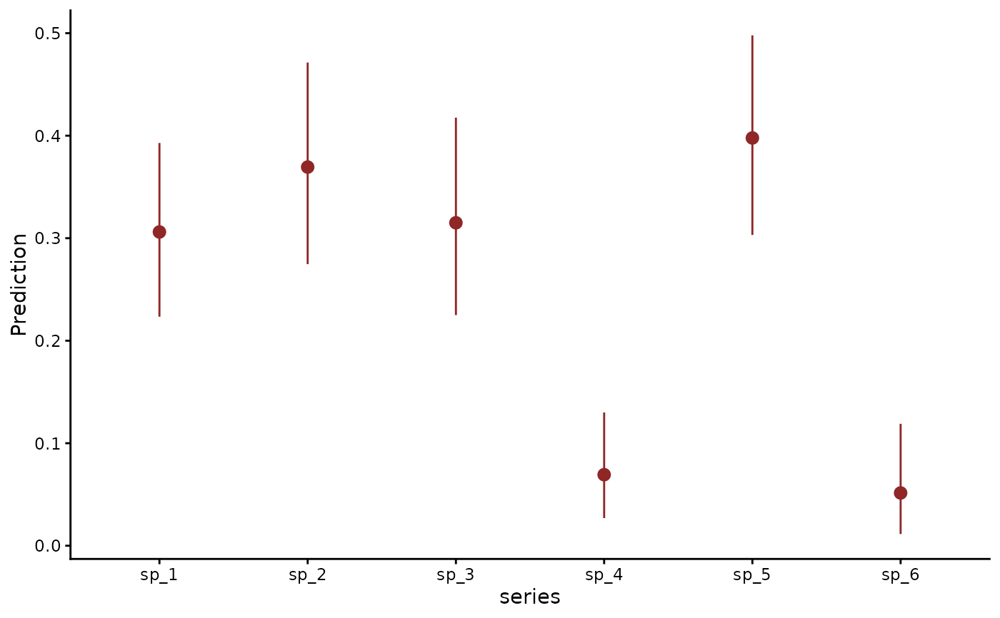
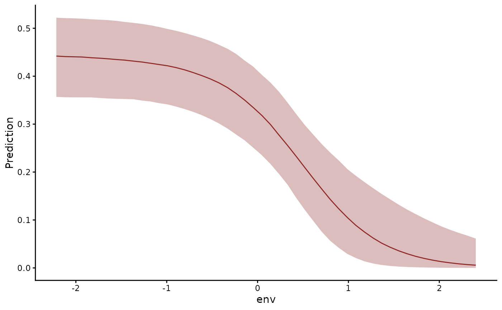
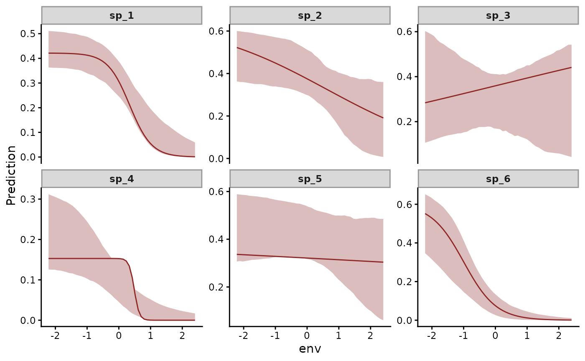
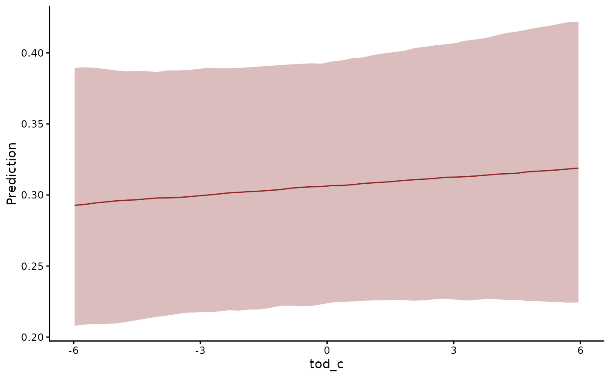
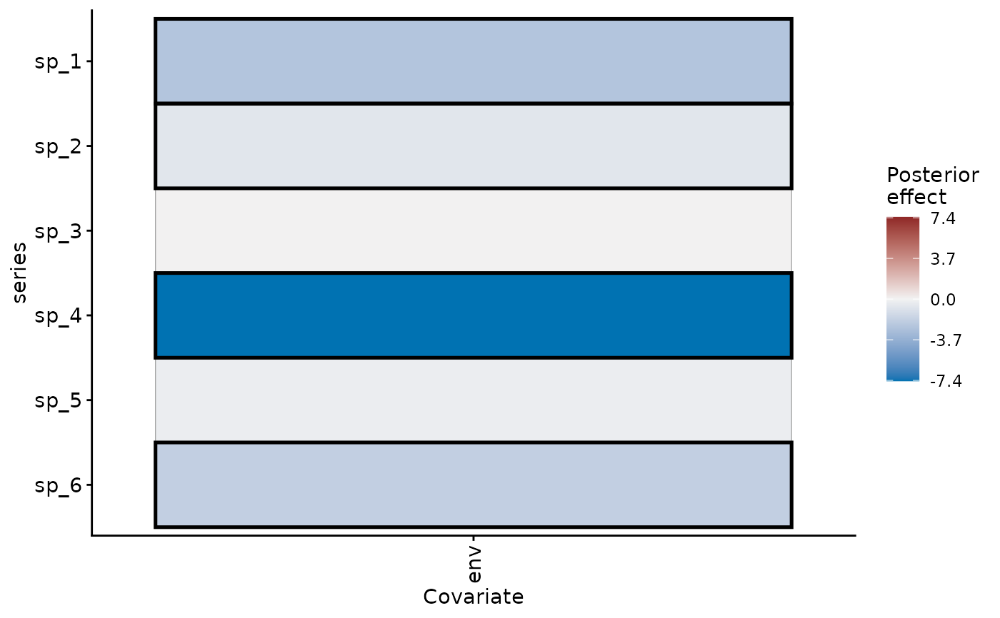
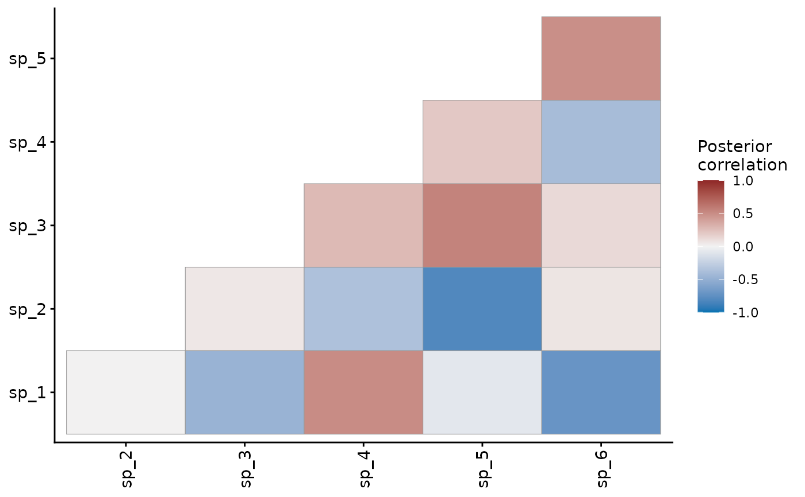
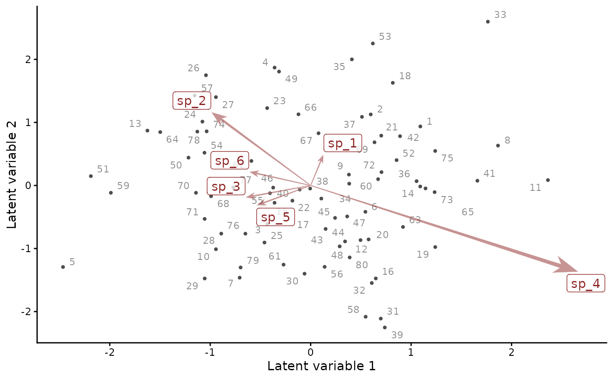
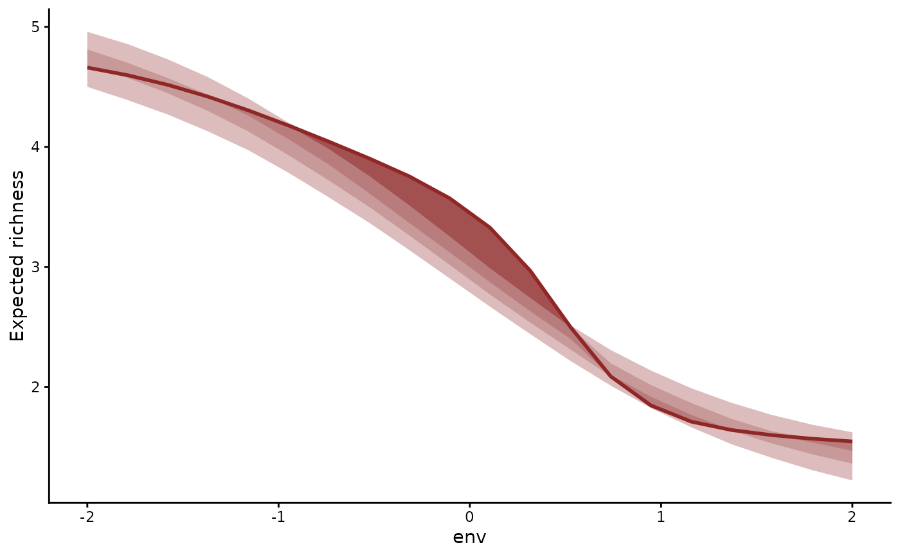
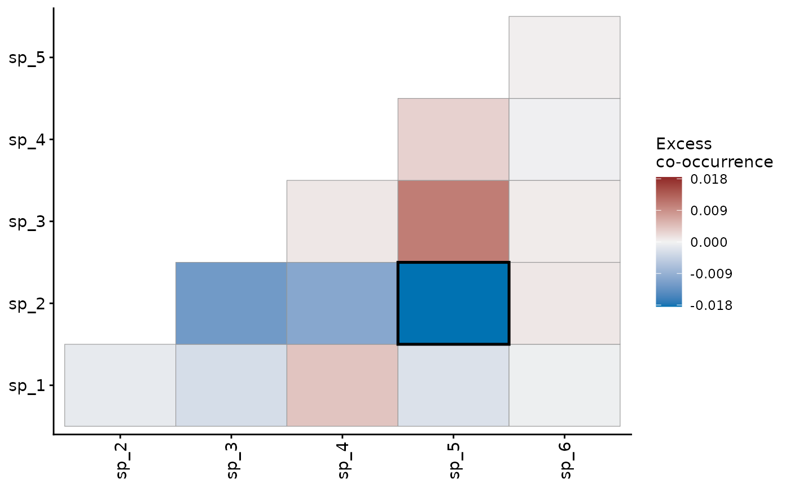

Fits a joint species distribution model (JSDM) to the presences,
detections or counts of many species across many sampling units.
Species often co-occur more or less often than their responses to
the measured covariates predict. A few latent factors capture that
residual association. They need far fewer parameters than a full
correlation matrix among species. The observation model takes the
smooths, Gaussian processes and random effects of any mvgam model.
The factors take their own predictors through factor_formula.
Write lv_axis() in one of its terms to give each factor its own
effect of a covariate, a constrained ordination.
Arguments
- formula
The observation model formula, in brms syntax: smooths
s()andt2(),gp(), varying intercepts and slopes,mm(),mo(),me(),mi(), distributional and non-linear sub-formulas andoffset(). A response leaves rows out by holdingNAthere.mvgam_formula()lists the terms each formula refuses.gp()takes the approximate Hilbert-space form (gp(x, k = 20)) or the exact form (gp(x), nok), under any brms kernel. An exact term predicts at new covariate values by conditioning on its fitted values, as brms does. Its cost grows with the cube of the number of unique values.- factor_formula
A one-sided formula for the latent factors' linear predictor. Write
lv_axis()in a term to give each factor its own effect, as in~ s(elev, by = lv_axis())or~ elev:lv_axis(). Each covariate must take one value per sampling unit. The deprecatedby = trendacts asby = lv_axis(). Defaults to~ -1, factors without predictors.- knots
Optional named list of knot positions for smooth terms, by covariate, as
knotsofmvgam().- data
A
data.frameorlistholding the response, the covariates of both formulas, theunitcolumn and thespeciesfactor.Data held as arrays, as unmarked, ubms, flocker, Hmsc and spOccupancy take them, convert to this long format.
pivot_detection_array()converts detection histories of occupancy and N-mixture data:[J, K],[N, J, K], multi-season[N, J, T, K]or a list of[J, K]matrices per species.pivot_species_matrix()converts a wide[J, N]species composition matrix.- newdata
Optional held-out
data.frame, stored on the fit asobject$test_data. Fitting draws no forecasts.forecast()called withoutnewdataforecasts these times, carrying the fitted latent state forward.plot(fit, type = "series")overlays them.posterior_predict()on these data uses the covariate part alone. The section 'Which prediction function?' ofpredict.mvgam()compares the two.- family
The observation family every species shares, as a family object. mvgam_families lists them. Defaults to
binomial()for presence-absence data. Counts take a count family such aspoisson()ornegbinomial().The factors and a family's dispersion parameter, such as
shape,phiorsigma, explain the same residual variation. Where the factors explain it, the dispersion posterior runs toward its limit and the sampler can diverge there. An informative dispersion prior or a family without dispersion, such aspoisson(), settles it.For one family per species, write
formulawith onebrms::bf()per species, each naming its family, as inbf(count ~ env, family = poisson()) + bf(seen ~ env, family = bernoulli()). The responses then form the species axis, in place of aspeciescolumn.familyapplies to any response that names none.The simplex families
diri(),multi()andcateg()need a per-species term, as iny ~ env * speciesory ~ 0 + species + env:species. A coefficient shared by every species cancels from their likelihood. Iny ~ env,b_Interceptandb_envtake their priors alone. mvgam warns of this once per session.diri()sets out the identification.- unit
The unquoted name of the numeric column indexing the sampling units, often
timeorsite. Defaults totime.- species
The unquoted name of the factor column indexing the species. Defaults to
series, as in other mvgam models.- priors
Optional
brmspriorof priors to set, frombrms::prior().prior, the brms spelling, is accepted in....get_prior()of a model built withrun_model = FALSElists every class and coefficient with its default, thetrait_slopesterms among them. See Trait-mediated responses for their scales.- n_lv
Integer number of latent factors, from 1 to the number of species. Defaults to 2. The residual covariance
Z Z' + diag(Psi^2)has rank at most the number of species. Further columns ofZadd nothing.Under the default Student-t prior on
Z, or a structured prior built fromtraits,phyloorloadings_prior$distances,n_lvis the number of factors in the likelihood. Under the multiplicative gamma process prior (loadings_prior = "mgp"orlist(column_shrinkage = "mgp", ...)) it is a ceiling. The prior shrinks later columns towards zero. A largerloadings_prior$mgp_a2shrinks them harder.active_factors()counts the factors the data support.- traits
Optional species traits for a structured loadings prior: a
data.frameor matrix with one row per species, or the name of an element ofdata2. Rows are matched tolevels(data[[species]])by aseriescolumn, by row name or by order. Factor columns are one-hot encoded and numeric columns are standardised. They becomeloadings_prior$features. Supplying an explicitloadings_prioras well is refused.- trait_slopes
Optional one-sided formula of traits, such as
~ trait1 + trait2, for species responses that depend on their traits (the fourth-corner model of Hmsc). The traits must be columns ofdata, constant within species, as brms takes every variable of a formula. A prediction frame that omits a trait takes each species' value from the fit. The grids ofconditional_effects()and marginaleffects omit the traits, which draws each species at its own. Each term offormulatakes a shared effect, an effect of each trait and a species deviation. See Trait-mediated responses.- phylo
Optional phylogeny: an
ape::phylotree, whose cophenetic distances are taken, or a numeric distance matrix with row and column names matchinglevels(data[[species]]). The distances are rescaled to a maximum of 1 and becomeloadings_prior$distances$phylo. A tree that is not ultrametric draws a warning once. A tree requires the ape package. Supplying an explicitloadings_prioras well is refused.- loadings_prior
Optional structured prior on the loadings, as
loadings_priorofmvgam()takes it. Supplyingtraitsorphyloas well is refused.- backend
"cmdstanr"or"rstan". Defaults togetOption("brms.backend", "cmdstanr").- threads
Positive integer number of threads per chain, or
NULL(the default) for none. The model is compiled withcpp_options$stan_threads = TRUE. cmdstanr then samples withthreads_per_chain = threads. The closure-unit families (nmix(),occ()) and the multi-response families (diri(),mvn(),mvt(),multi(),categ()) split their likelihood over units withreduce_sum, in about eight chunks. With 50 or more closure units,threads = 4samples about a third faster. Fewer units can sample slower, the threading overhead outweighing the gain. A brms family without atrend_formulauses the threading brms writes.A brms family with a
trend_formulasamples each chain on one thread whateverthreadssays. The threaded likelihood brms writes leaves no place to add the trend. Each such fit warns.- run_model
Logical.
FALSEbuilds the model without parsing, compiling or sampling it. The result holds$stancode,$standataand the prior table, with$fitset toNULL.stancode.mvgam_formula(),standata.mvgam_formula()andget_prior.mvgam_formula()return them. Methods that need draws, such assummary()andforecast(), refuse it. Ajsdgam()model has nomvgam_formula(), which makesrun_model = FALSEthe way to inspect one before fitting. Defaults toTRUE.- ...
Further arguments of
mvgam(), such asdata2(wheretraitsandphylofind a named element),algorithm,chainsandsilent.
Value
A fitted model of class c("mvgam", "jsdgam", "brmsfit").
Every mvgam method applies, such as summary(), predict(),
forecast() and loo(). ordinate() and residual_cor()
describe the factors. update(fit, n_lv = 3) refits it through
jsdgam() with the arguments given changed.
Trait-mediated responses
trait_slopes = ~ size adds terms to formula. Each term takes a
shared effect, an effect of each trait and a species deviation:
- Intercept
size, with the species deviation1in(1 + ... | sp | series)- A term with design columns
a numeric or factor covariate, an interaction,
I(),poly(),mo(),me()ormi(): the termenv:sizeand the deviationenvin(1 + env | sp | series). The|sp|tag correlates the deviations under one LKJ prior.- A smooth,
s()ort2() s(x, by = size)scales the smooth by the trait.s(x, by = series, m = 1)gives each species a smooth penalised towards a flat line.- A Gaussian process,
gp() gp(x, by = size)andgp(x, by = series), one approximate process per species- A group-level term
entered as written, as is a smooth with
bs = "re"orbs = "fs"
A smooth trait, ~ s(size), gives the intercept s(size). Each
design column of a covariate scales the trait's smooth: env takes
s(size, by = env) and a factor hab takes s(size, by = habb). A
smooth of x takes the surface t2(x, size). A smooth with its own
by, such as s(x, by = hab), crosses the trait level by level.
Its species deviations keep the by. mo(), me() and mi()
terms cross linear traits alone.
A smooth or gp() takes one column of data as its by. A factor
level, a poly() column or a by scaled per species enters through
a derived column. Its name follows fixef.mvgam(), such as habb,
polyx21 or env_size. Each prediction frame recomputes these
columns from the variables they come from. A frame that changes
env then changes env_size.
A crossing of a centred smooth passes through zero at the mean of its
covariates (mgcv's pc). The shared term then carries the effect at
the means. mgcv leaves a smooth with a numeric by uncentred. Its
crossing keeps the constant, the trait's effect on that column's
slope. A t2() surface takes first-order margins. Their penalties
separate it from the main smooths. A margin of one covariate is a thin
plate spline, or keeps a cyclic basis. An s() of several covariates
gives one isotropic Duchon spline margin.
The coefficients take their brms names, such as b_env:size. Each
population-level coefficient takes normal(0, r / s) by default. s
is the SD of its design column. r is 1, or the SD of the response
under an identity link, which keeps the coefficients in its units.
Every covariate then has one prior scale on the link, whatever its
units or the basis poly() gives it, as rstanarm's autoscaled priors
do. student_t(3, 0, 2.5 r) is the default on the SDs of the
correlated species deviations. The smooth and gp() deviations take
the brms defaults. priors overrides any of them. A prior on class
b without a coef replaces every coefficient's default. A term of
formula naming the species is refused: each species already takes
its own response. For some of these terms alone, write them in
formula directly, as in
y ~ env + size + env:size + (1 + env | series).
References
Warton, D. I., Blanchet, F. G., O'Hara, R. B., Ovaskainen, O., Taskinen, S., Walker, S. C. and Hui, F. K. C. (2015). So many variables: joint modeling in community ecology. Trends in Ecology and Evolution, 30(12):766-779. doi:10.1016/j.tree.2015.09.007
Ovaskainen, O., Tikhonov, G., Norberg, A., Blanchet, F. G., Duan, L., Dunson, D., Roslin, T. and Abrego, N. (2017). How to make more out of community data? Ecology Letters, 20(5):561-576. doi:10.1111/ele.12757
Tikhonov, G., Opedal, O. H., Abrego, N., Lehikoinen, A., de Jonge, M. M. J., Oksanen, J. and Ovaskainen, O. (2020). Joint species distribution modelling with the R-package Hmsc. Methods in Ecology and Evolution, 11(3):442-447. doi:10.1111/2041-210X.13345
Hui, F. K. C. (2016). boral - Bayesian Ordination and Regression Analysis of Multivariate Abundance Data in R. Methods in Ecology and Evolution, 7(6):744-750. doi:10.1111/2041-210X.12514
Heaps, S. E. and Jermyn, I. H. (2024). Structured prior distributions for the covariance matrix in latent factor models. Statistics and Computing, 34:143. doi:10.1007/s11222-024-10454-0
See also
sim_jsdgam() simulates data this function fits.
sim_closure_unit_data() simulates the occ() and nmix()
case. residual_cor(), ordinate(), shared_variation(),
active_factors() and compare_loadings() interpret the fitted
factors. species_effects() gives each species' response to the
covariates. community() gives richness, diversity and
co-occurrence. lv_axis() gives each factor its own covariate
effect. how_to_cite() drafts a methods paragraph for the fit and
methods_md() writes its equations.
The JSDM article fits a negative
binomial model with a trait-informed loadings prior, ordination
biplots and multiplicative gamma process shrinkage. The
JSDM cheatsheet summarises the
functions on one page.
Other model fitting:
check_newdata(),
mvgam(),
mvgam_data(),
mvgam_multiple(),
pivot_detection_array(),
pivot_species_matrix(),
print.mvgam_formula(),
series_to_mvgam(),
stancode.mvgam_formula(),
update.mvgam()
Examples
# \dontrun{
# Detections of 6 species at 80 sites, 4 visits each. Occupancy
# responds to the site covariate `env` and detection to the time of
# day `tod_c`. Two latent factors drive the species associations.
simdat <- sim_closure_unit_data(
family = occ(),
n_species = 6L,
n_sites = 80L,
n_visits = 4L,
n_lv = 2L,
seed = 1L
)
# A joint occupancy model. Each species has its own occupancy
# intercept and `env` slope, plus its own detection intercept. Two
# latent factors take up the residual association.
mod <- jsdgam(
formula = bf(y ~ series * env, p ~ series + tod_c),
factor_formula = ~ -1,
data = simdat$data_train,
family = occ(),
n_lv = 2L,
chains = 2,
silent = 2
)
#> Warning: 1028 of 2000 (51.0%) transitions ended with a divergence.
#> See https://mc-stan.org/misc/warnings for details.
summary(mod)
#> Family: occ
#> Links: mu = logit; p = logit
#> Formula: y ~ series * env
#> p ~ series + tod_c
#> Data: simdat$data_train (Number of observations: 1920)
#> Species: 6
#> Trends: 2 latent factors
#> Draws: 2 chains, each with iter = 2000; warmup = 1000; thin = 1;
#> total post-warmup draws = 2000
#>
#> == Observation Model ==
#> Regression Coefficients:
#> Estimate Est.Error l-95% CI u-95% CI Rhat Bulk_ESS Tail_ESS
#> Intercept 0.98 0.40 0.23 2.04 2.24 285 118
#> p_Intercept -0.27 0.14 -0.54 0.07 2.23 53 60
#> seriessp_2 -0.45 0.69 -1.59 1.35 2.23 39 78
#> seriessp_3 -1.14 0.53 -2.61 -0.29 2.25 275 78
#> seriessp_4 1.92 3.42 -2.97 5.20 2.23 3 2
#> seriessp_5 -0.21 0.83 -1.35 1.95 2.24 21 105
#> seriessp_6 -2.99 0.56 -4.47 -1.88 2.23 441 60
#> env -2.50 0.68 -3.63 -1.09 2.24 8 112
#> seriessp_2:env 1.84 1.04 -0.51 3.09 2.23 7 88
#> seriessp_3:env 2.55 0.86 0.57 3.80 2.27 7 54
#> seriessp_4:env -4.95 5.00 -9.83 1.94 2.25 3 2
#> seriessp_5:env 2.23 0.93 0.09 3.30 2.23 6 120
#> seriessp_6:env 0.58 0.80 -1.35 1.97 2.23 16 94
#> p_seriessp_2 0.75 0.26 0.15 0.97 2.23 4 2
#> p_seriessp_3 1.21 0.20 0.70 1.54 2.23 21 65
#> p_seriessp_4 -1.21 0.35 -1.75 -0.38 2.24 10 92
#> p_seriessp_5 0.46 0.18 0.14 0.92 2.23 59 81
#> p_seriessp_6 0.69 0.26 0.06 1.24 2.23 611 81
#> p_tod_c 0.01 0.01 -0.02 0.04 2.23 1582 75
#>
#> == Trend Model ==
#> Factor Loadings:
#> Estimate Est.Error l-95% CI u-95% CI Rhat Bulk_ESS Tail_ESS
#> Z_tilde[sp_1,1] 0.71 0.42 0.17 2.05 2.25 522 78
#> Z_tilde[sp_2,1] 0.11 1.26 -1.35 3.09 2.23 548 83
#> Z_tilde[sp_3,1] -0.29 1.51 -3.48 1.73 2.34 31 17
#> Z_tilde[sp_4,1] 1.19 1.20 -1.06 2.25 2.23 3 2
#> Z_tilde[sp_5,1] 0.16 1.34 -1.26 4.07 2.23 15 93
#> Z_tilde[sp_6,1] 0.01 0.52 -0.92 1.37 2.24 45 54
#> Z_tilde[sp_2,2] 1.14 1.27 0.05 5.36 2.24 64 60
#> Z_tilde[sp_3,2] 0.12 1.65 -1.33 5.64 2.34 7 21
#> Z_tilde[sp_4,2] -1.25 1.57 -2.71 1.56 2.23 3 2
#> Z_tilde[sp_5,2] -0.76 1.39 -5.33 0.79 2.25 327 93
#> Z_tilde[sp_6,2] -0.04 0.51 -1.15 0.95 2.24 632 66
#>
#> Draws were sampled using sampling(NUTS). For each parameter, Bulk_ESS
#> and Tail_ESS are effective sample size measures, and Rhat is the potential
#> scale reduction factor on split chains (at convergence, Rhat = 1).
#>
#> Next steps:
#> - `pp_check(fit, type = "fit_stat")`: goodness of fit of unit totals
#> - `plot(hindcast(fit, type = "latent_state"))`: posterior occupancy of each unit
#> - `shared_variation(fit)`: covariance the factors imply, unchanged by rotation
#> - `residual_cor(fit)`: implied correlations among species
#> - `ordinate(fit)`: biplot of the factor scores and loadings
#> - `loo(fit)` / `loo_compare(...)`: model fit + comparison
#> Use `how_to_cite(fit)` for a methods paragraph and `methods_md(fit)` for its equations.
# The effect of `env` on the chance of a detection, occupancy times
# detection
conditional_effects(mod)




# Each species' response to env, outlined where its sign is clear
plot(species_effects(mod, variables = "env"))

# The residual correlations among species the factors imply
plot(residual_cor(mod))

# Site scores and species loadings on the two factors
ordinate(mod, rotation = "varimax")

# Expected richness along `env`. The second plot marks the pairs of
# species found together more often than `env` predicts.
gradient <- datagrid(model = mod, env = seq(-2, 2, length.out = 20))
cm <- community(mod, newdata = gradient)
plot(cm)

plot(cm, type = "cooccurrence")

# The draws, for any contrast: richness at the end of the gradient
# less that at its start
rv <- as_draws_rvars(cm)
rv$richness[20] - rv$richness[1]
#> rvar<2000>[1] mean ± sd:
#> [1] -3.2 ± 0.33
# Next, compare n_lv = 1 with update(mod, n_lv = 1L) and loo()
# }